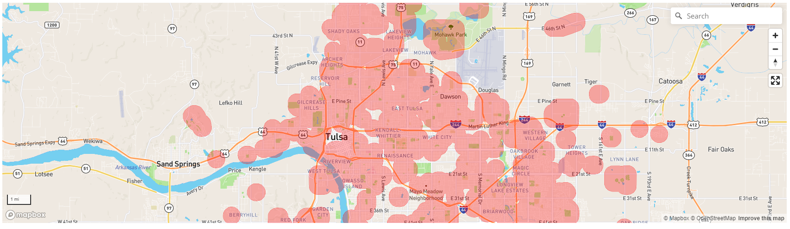
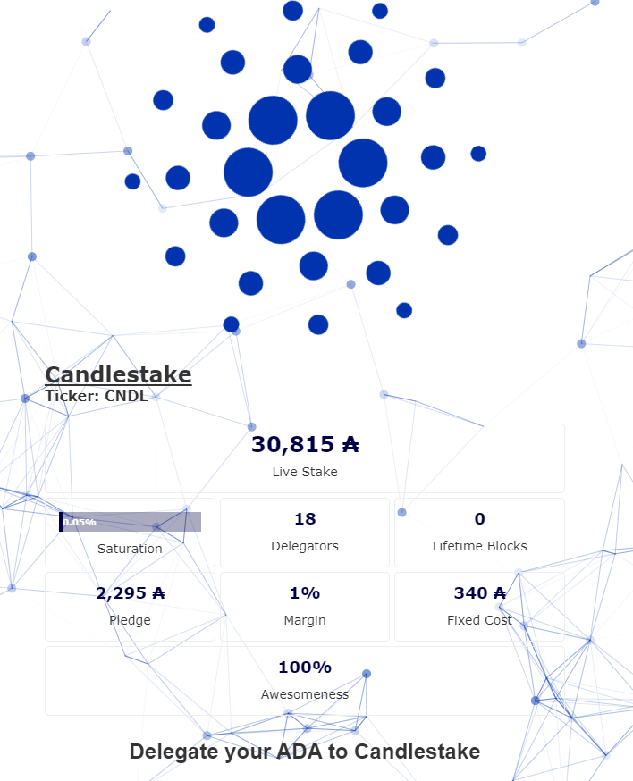
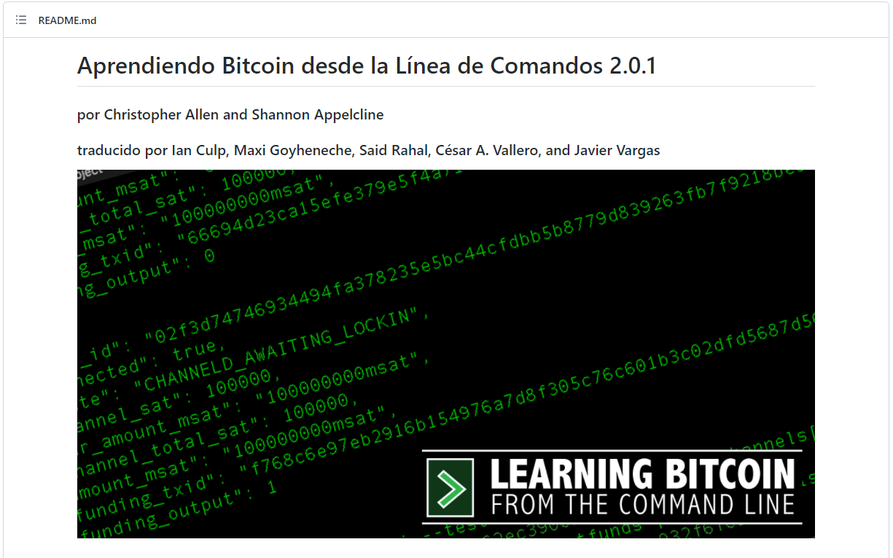
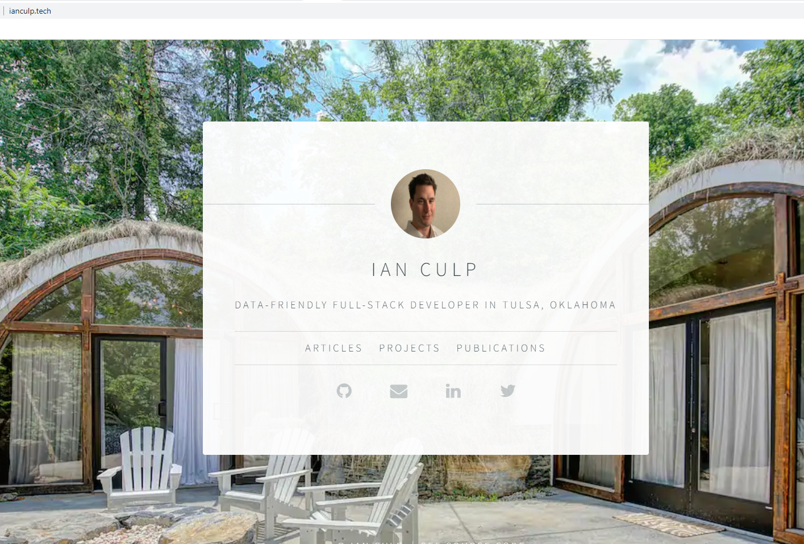

Ian Culp
Data-friendly Full-stack Developer in Tulsa, Oklahoma
Projects
-

Gap Map
- Mapping tool with boundaries extended around irregular parcel dimensions
-

Candlestake, ticker CNDL
- Cardano Stake Pool Operator, ticker CNDL
-

Learning-Bitcoin-from-the-Command-Line en Español
- Spanish translation of Learning Bitcoin from the Command Line
-
Route 66 Web Scraper
- Web Scraper to prepopulate data for AAA Route 66 travel app
-

Original website
- First attempt at a portfolio site
-
Original website
- First attempt at a portfolio site